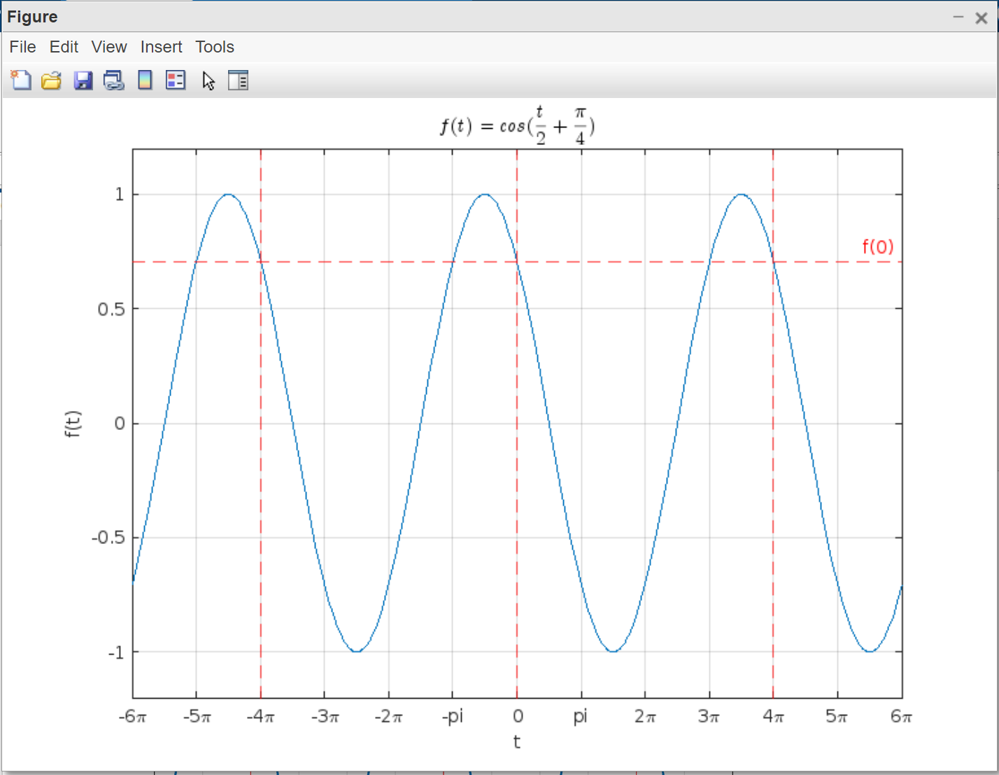
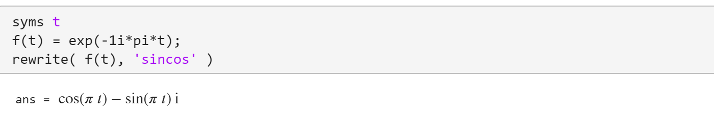
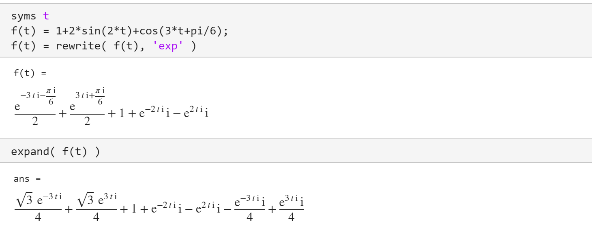
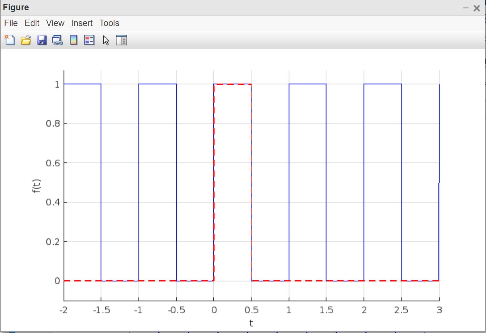
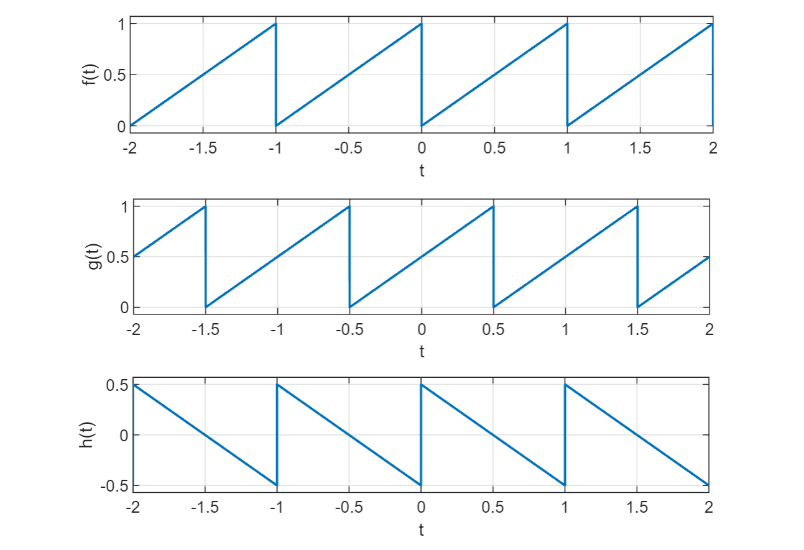
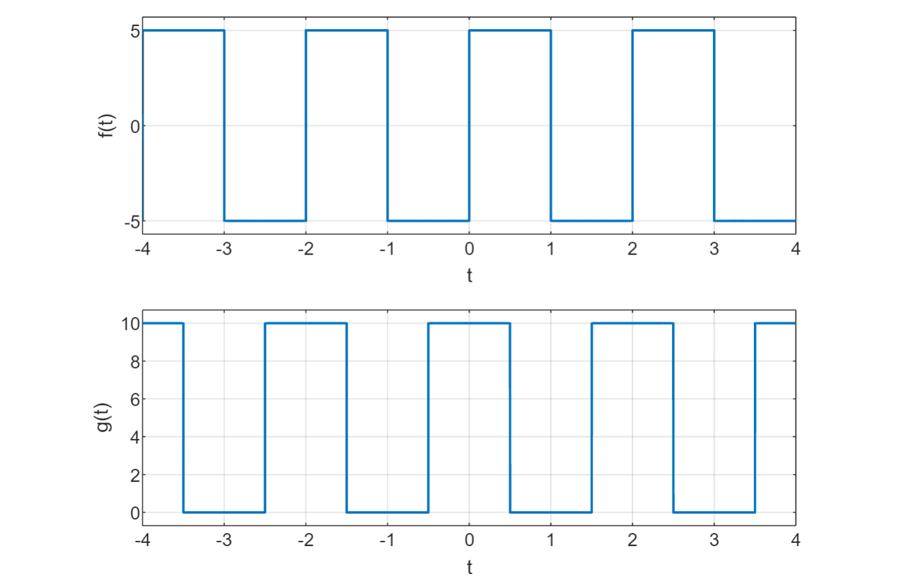
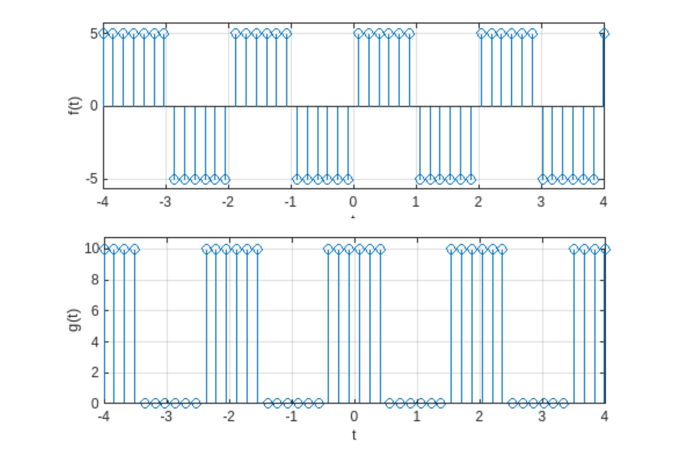

ฟังก์ชันเป็นคาบและการเขียนโค้ดด้วย MATLAB#
บทความนี้กล่าวถึง การเขียนโค้ด MATLAB สำหรับการสร้างและแสดงรูปกราฟของฟังก์ชันที่มีตัวแปรต้นเป็นเวลา (t) และเป็นฟังก์ชันคาบ
▷ ฟังก์ชันเป็นคาบ (Periodic Functions)#
ฟังก์ชันในทางคณิตศาสตร์ เช่น ฟังก์ชันตรีโกณมิติ ไซน์และโคไซน์เป็นฟังก์ชันที่ให้ค่าซ้ำ ในช่วงค่าที่จำกัดสำหรับตัวแปรต้น หรือเรียกว่า "คาบ" (Period) ฟังก์ชันไซน์ หรือ มีคาบเท่ากับ
โดยนิยามแล้ว ถ้าฟังก์ชัน เป็นฟังก์ชันรายคาบสำหรับตัวแปร และมีคาบเท่ากับ มีคุณสมบัติดังนี้
ฟังก์ชัน สามารถให้ค่าเป็นเลขจำนวนจริง รวมถึงเลขจำนวนเชิงซ้อนก็ได้
คำถาม: ถ้าให้ ฟังก์ชันนี้มีคาบ () และความถี่ () เท่าไหร่ ?
วิธีการหาคาบและความถี่ของฟังก์ชันไซน์มีดังนี้
กำหนดให้ โดยที่ คือ ความถี่เชิงมุม (Angular Frequency) มีหน่วยเป็นเรเดียนต่อวินาที (rad/s) มีคาบ และความถี่ ซึ่งเป็นส่วนกลับของคาบและมีหน่วยเป็นเฮิร์ตซ์ (Hz)
ในตัวอย่างนี้ ถ้าให้ ดังนั้น หรือ และ
หรืออาจใช้วิธีพิจารณาดังนี้ ถ้า เป็นคาบของฟังก์ชัน ดังนั้นโดยนิยาม จะเขียนสมการได้ดังนี้
และได้สมการเป็นจริง เพราะว่า และทำให้ ได้ค่าเท่ากับ 1 และ ได้ค่าเท่ากับ 0
วิธีการคำนวณข้างบน มีการใช้สูตรสำหรับฟังก์ชันไซน์ดังนี้
คำถาม: ถ้าให้ ฟังก์ชันนี้มีคาบ () เท่าไหร่ ?
ถ้า จะทำให้
วิธีการคำนวณข้างบน มีการใช้สูตรสำหรับฟังก์ชันโคไซน์ดังนี้
ลองมาดูตัวอย่างการเขียนโค้ดเพื่อวาดรูปกราฟสำหรับฟังก์ชัน ด้วย MATLAB และใช้ Symbolic Math Toolbox
% Create a symbol (t is a symbol for a real value).
syms t real
% Define the function f(t).
f(t) = cos(t/2 + pi/4);
% Set the period T.
T = 4*pi;
% Check whether f(t) is a periodic function with period T.
disp( isAlways( f(t) == f(t+T)) ) % The output must be true (1).
% Set time time interval for function plot.
ts = [-6*pi, 6*pi];
% Plot f(t).
fplot( f(t), ts, 'linewidth', 1.2 ),
grid on, xlabel('t'), ylabel('f(t)');
% Add a small margin of padding on the y-axis.
ylim padded;
% Set the title.
title( '$$f(t)=cos(\frac{t}{2}+\frac{\pi}{4})$$','interpreter','latex' )
% Create an array of ticks on the x-axis.
xticks = ts(1):pi:ts(end);
set( gca, 'XTick', xticks );
% Set the labels on the x-axis.
xlabels = replace( string(sym(xticks)), '*pi', '\pi' );
set( gca, 'XTickLabel', xlabels );
% Add vertical and horizontal dotted lines (red color).
xline( [-T 0 T],'--r' );
yline( double(f(0)), '--r', {'f(0)'} );

รูป: กราฟของฟังก์ชัน
คำถาม: จงหาคาบของฟังก์ชัน
ได้จากผลบวกของค่าคงที่กับฟังก์ชันไซน์ ได้แก่ ฟังก์ชัน มีคาบ และ ฟังก์ชัน มีคาบ
เนื่องจากอัตราส่วน เป็นเลขตรรกยะ ดังนั้นคาบของฟังก์ชัน สามารถหาได้จาก โดยที่ และ เป็นเลขจำนวนเต็มบวกที่ทำให้สมการดังกล่าวเป็นจริง ซึ่งก็คือ และ มีคาบของฟังก์ชัน
ลองแทนค่า ลงในสมการต่อไปนี้
จะได้สมการที่เป็นจริง
คำถาม: ฟังก์ชันที่ให้ค่าเป็นเลขเชิงซ้อน เป็นฟังก์ชันรายคาบหรือไม่ ?
ถ้า เป็นคาบของฟังก์ชัน ดังนั้นโดยนิยาม จะเขียนสมการได้ดังนี้
ถ้าจะให้ได้ ค่าของ จะต้องเท่ากับ 2 ซึ่งเป็นคาบของฟังก์ชันดังกล่าว
หากใช้สูตรของอ็อยเลอร์ (Euler's formula) ก็สามารถเขียนฟังก์ชัน ได้ใหม่ ให้อยู่ในรูปของฟังก์ชันโคไซน์และไซน์ ซึ่งประกอบด้วยสองส่วนคือ ฟังก์ชันที่ให้ค่าเป็นจำนวนจริง (Real-Valued Function) และฟังก์ชันที่ให้ค่าเป็นจำนวนจินตภาพ (Imaginary-Valued Function)
จากสูตรของอ็อยเลอร์ ให้แทนที่ ด้วย จะได้
ฟังก์ชัน และ มีคาบเหมือนกันคือ
ตัวอย่างการเขียนโค้ด MATLAB สำหรับเลขชี้กำลังเชิงซ้อน และเขียนใหม่ให้อยู่ในรูปของฟังก์ชันโคไซน์และไซน์ โดยใช้สูตรอ็อยเลอร์
syms t
f(t) = exp(-1i*pi*t);
rewrite( f(t), 'sincos' )
ข้อสังเกต: สัญลักษณ์ คือ 1i สำหรับการเขียนโค้ดด้วย MATLAB

รูป: การเขียนโค้ด MATLAB และตัวอย่างเอาต์พุต
คำถาม: จงเขียนฟังก์ชัน ให้อยู่ในรูปผลรวมของฟังก์ชันเลขชี้กำลังเชิงซ้อน โดยใช้สูตรของอ็อยเลอร์
ฟังก์ชันเป็นคาบ ซึ่งมีคาบ หรือ สามารถเขียนใหม่ได้เป็น
หรือเขียนใหม่ได้เป็น
โดยที่มีค่าสัมประสิทธิ์คงตัวดังนี้
ตัวอย่างการเขียนโค้ด MATLAB สำหรับฟังก์ชัน และเขียนใหม่ให้อยู่ในรูปของฟังก์ชันเลขชี้กำลังเชิงซ้อน โดยใช้สูตรอ็อยเลอร์
syms t
f(t) = 1+2*sin(2*t)+cos(3*t+pi/6);
f(t) = rewrite( f(t), 'exp' )
expand( f(t) )
ข้อสังเกต: สัญลักษณ์ จะถูกแทนที่ด้วย 1i สำหรับการเขียนโค้ดด้วย MATLAB

รูป: การเขียนโค้ด MATLAB และตัวอย่างเอาต์พุต
▷ การสร้างฟังก์ชันเป็นคาบจากฟังก์ชันไม่เป็นคาบ#
ถ้ามีฟังก์ชันไม่เป็นคาบ (Aperiodic Function) โดยใช้สัญลักษณ์เป็น ที่มีค่าอยู่ในเฉพาะช่วงจำกัด (Limited Interval) เช่น และมีค่าเป็น 0 เมื่ออยู่นอกช่วงดังกล่าว ฟังก์ชันในลักษณะนี้สามารถนำมาสร้างฟังก์ชันเป็นคาบได้
ตัวอย่าง: การสร้างฟังก์ชันเป็นคาบรูปสี่เหลี่ยม (Rectangular Waveform)
ลองมาดูตัวอย่างฟังก์ชัน ที่มีลักษณะเป็นพัลส์ (Pulse) และสามารถสร้างได้โดยใช้ฟังก์ชันเป็นช่วง (Piecewise Function) ดังนี้
โดยที่ เป็นค่าคงที่ และ ซึ่งเป็นอัตราส่วนระหว่างความกว้างพัลส์กับคาบของฟังก์ชัน
ถ้านำฟังก์ชัน มาสร้างเป็นฟังก์ชัน ที่มีคาบเท่ากับ ก็จะได้ฟังก์ชันที่มีลักษณะเหมือนคลื่นสัญญาณสี่เหลี่ยม (Rectangular Wave)
ถัดไปเป็นโค้ด MATLAB ที่สาธิตการสร้างฟังก์ชัน โดยให้ สำหรับการวาดรูปกราฟ และ
% Clear figures, variables and command outputs.
clf; clc; clearvars;
% Define t as a symbol for any real number.
syms t real
% Set the period (T) of the function.
T=1;
% Define alpha as a symbol
syms alpha
assume( 0 < alpha & alpha < 1 )
% Define f_T(t) function
f_T(t) = piecewise( 0 <= t & t < alpha*T, 1, 0 );
% Set the time interval for calculation.
ts = [-2*T, 3*T];
% Construct a periodic function f(t) from f_T(t).
f = 0;
for t_shift=ts(1):T:ts(end)
f = f + subs( f_T, t, (t-t_shift) );
end
% Plot f(t) and f_T(t) with alpha = 1/2.
hold on;
fplot( subs(f,alpha,1/2), ts, 'b', 'linewidth', 1.2 )
fplot( subs(f_T,alpha,1/2), ts, '--r' , 'linewidth', 1.2 )
ylim padded, grid on, xlabel('t'), ylabel('f(t)')
hold off;

รูป: การแสดงรูปกราฟของฟังก์ชัน ( และ ) เป็นคาบด้วย MATLAB
ตัวอย่าง: การสร้างฟังก์ชันเป็นคาบที่มีรูปคลื่นฟันเลื่อย (Sawtooth Waveform)
กำหนดให้ฟังก์ชัน เป็นฟังก์ชันเป็นช่วงที่มีลักษณะเป็นเส้นตรงเริ่มต้นที่จุด (0,0) สำหรับช่วง ตามรูปแบบต่อไปนี้ และนำมาใช้สร้างฟังก์ชันเป็นคาบ และมีคาบเท่ากับ
โดยที่ เป็นค่าคงที่และมีค่าเป็นบวก ดังนั้นฟังก์ชันนี้จะมีค่าอยู่ระหว่าง ถึง
ฟังก์ชันเป็นคาบ นี้ สามารถนำไปสร้างฟังก์ชันเป็นคาบอื่นได้ เช่น เกิดจากการเลื่อนเวลา (Time Shifting) การกลับด้านของเวลา (Time Reversal) การบวกหรือลบด้วยค่าคงที่ เป็นต้น
โดยที่ฟังก์ชัน เกิดจากการเลื่อนเวลาของฟังก์ชัน ไปทางขวาเป็นระยะเวลาเท่ากับ และฟังก์ชัน เกิดจากการกลับด้านเชิงเวลาของฟังก์ชัน แล้วลบด้วยค่าคงที่
ตัวอย่างการเขียนโค้ด MATLAB มีดังนี้
% Clear figures, variables and command outputs.
clf; clc; clearvars;
% Define a symbol for any real numbers.
syms t real
% Set the amplitude and the period of the function.
A=1; T=1;
% Define f_T(t) function
f_T(t) = piecewise( 0 < t & t < T, A*t/T, 0 );
% Set the time interval for calculation.
ts = [-2*T, 2*T];
% Construct a periodic function f(t) from f_T(t).
f = 0;
for t_shift=ts(1)-T:T:ts(end)+T
f = f + subs(f_T,t,(t-t_shift));
end
% Define g(t) and h(t)
g(t) = f(t - T/2);
h(t) = f(-t) - A/2;
% Plot f(t) and g(t)
fig = figure();
subplot(3,1,1); fplot( f, ts, 'linewidth', 1.2 ),
grid on, xlabel('t'), ylabel('f(t)'),
pbaspect([1 0.2 1]), ylim padded
subplot(3,1,2); fplot( g, ts, 'linewidth', 1.2 ),
grid on, xlabel('t'), ylabel('g(t)'),
pbaspect([1 0.2 1]), ylim padded
subplot(3,1,3); fplot( h, ts, 'linewidth', 1.2 ),
grid on, xlabel('t'), ylabel('h(t)'),
pbaspect([1 0.2 1]), ylim padded

รูป: การแสดงรูปกราฟของฟังก์ชันเป็นคาบ , และ ได้เลือกใช้ค่า และ
ตัวอย่าง: การสร้างฟังก์ชันเป็นคาบที่มีรูปคลื่นสี่เหลี่ยม (Square Waveform)
ตัวอย่างนี้สาธิตการใช้คำสั่ง mod() ของ MATLAB
และเป็นอีกวิธีหนึ่งในการนำไปใช้ในการสร้างฟังก์ชันเป็นคาบ
กำหนดให้ เป็นฟังก์ชันรูปคลื่นสี่เหลี่ยมที่มีค่าบวกและลบ และให้ฟังก์ชัน เกิดจากการเลื่อนเวลาฟังก์ชัน ไปทางซ้าย และเลื่อนขึ้นในแนวตั้ง (บวกด้วยค่า DC Offset)
โดยที่ เป็นค่าคงที่ และฟังก์ชันมีค่าต่ำสุดและสูงสุดอยู่ในช่วง
ตัวอย่างการเขียนโค้ด MATLAB มีดังนี้
% Clear figures, variables and command outputs.
clf; clc; clearvars;
% Define a symbol for any real numbers.
syms t real
% Set the amplitude and the period of the function.
A=5; T=2;
% Define f_T(t) function
f_T(t) = piecewise( 0 < t & t < T/2, A, -A );
% Set the time interval for calculation.
ts = [-2*T, 2*T];
% Create a periodic function f(t) from f_T(t) using mod().
f(t) = f_T( mod(t,T) );
% Define g(t)
g(t) = A + f(t + T/4);
% Plot f(t) and g(t)
fig = figure();
subplot(2,1,1); fplot( f, ts, 'linewidth', 1.2 ),
grid on, xlabel('t'), ylabel('f(t)'), ylim padded
subplot(2,1,2); fplot( g, ts, 'linewidth', 1.2 ),
grid on, xlabel('t'), ylabel('g(t)'), ylim padded

รูป: การแสดงรูปกราฟของฟังก์ชันเป็นคาบ และ ได้เลือกใช้ค่า และ
การเขียนโค้ด MATLAB เพื่อวาดรูปกราฟของฟังก์ชันโดยไม่สร้างฟังก์ชันเชิงสัญลักษณ์ มีแนวทางดังนี้
เริ่มต้นด้วยการสร้างอาร์เรย์ ts ของค่าตัวเลขสำหรับตัวแปร ตามจำนวนที่ต้องการ (N) ในช่วงตัวเลขที่กำหนดไว้
โดยใช้คำสั่ง linspace() ของ MATLAB
ถัดไปมีการสร้างฟังก์ชันใน MATLAB แบบที่เรียกว่า Anonymous Function
ชื่อ fs และ gs เพื่อใช้ในการคำนวณค่าของฟังก์ชัน และ สำหรับค่าตัวเลขจากอาร์เรย์ ts
แล้วนำไปใช้กับคำสั่ง stem() เพื่อวาดรูปกราฟแบบ Stem Plot
% Clear figures, variables and command outputs.
clf; clc; clearvars;
% Set the amplitude and the period.
A=5; T=2;
% Set the number of time steps.
N=50;
% Create an array of N time steps for t.
ts = linspace(-2*T,2*T,N);
% Create anonymous functions for f(t) and g(t)
fs = @(t) A*(2*(mod(t,T) < T/2)-1);
gs = @(t) A + fs(t+T/4);
% Plot the samples of f(t) and g(t)
fig = figure();
subplot(2,1,1); stem( ts, fs(ts), 'linewidth', 1.2 ),
grid on, xlabel('t'), ylabel('f(t)'), ylim padded
subplot(2,1,2); stem( ts, gs(ts), 'linewidth', 1.2 ),
grid on, xlabel('t'), ylabel('g(t)'), ylim padded

รูป: การแสดงรูปกราฟของฟังก์ชันเป็นคาบ และ โดยใช้รูปแบบ Stem Plot ได้เลือกใช้ค่า และ
ข้อสังเกต: ถ้าหากลองเปลี่ยนจากคำสั่ง stem() เป็น plot() และเพิ่มจำนวนข้อมูลสำหรับอาร์เรย์ ts
โดยการเพิ่มค่า N เช่น จาก 50 เป็น 500 จะได้รูปกราฟดูเหมือนกับรูปตัวอย่างที่แล้ว
▷ กล่าวสรุป#
บทความนี้ได้นำเสนอ ตัวอย่างการเขียนโค้ด MATLAB และใช้ Symbolic Math Toolbox เพื่อสร้างฟังก์ชันและแสดงรูปกราฟของฟังก์ชันเป็นคาบ
This work is licensed under a Creative Commons Attribution-ShareAlike 4.0 International License.
Created: 2022-10-30 | Last Updated: 2022-11-03